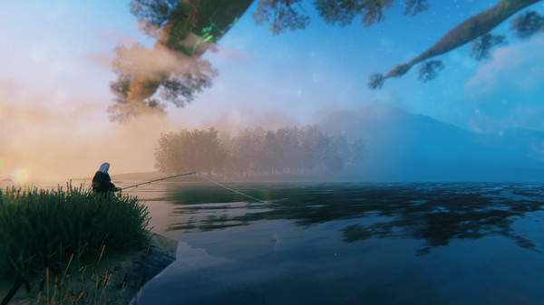
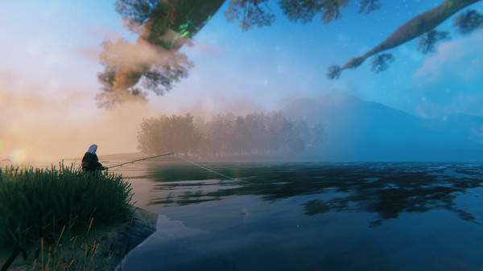

Valheim
A brutal exploration and survival game for 1-10 players, set in a procedurally-generated purgatory inspired by viking culture. Battle, build, and conquer your way to a saga worthy of Odin’s patronage!.
 

Systeemeisen
Bestuuringsysteem: Windows 7 or later
Processor: 2.6 GHz Quad Core or similar
Geheugen: 8 GB RAM
Grafische kaart: GeForce GTX 950 or Radeon HD 7970
Direct X: Versie 11
Opslagruimte: 1 GB beschikbare ruimte
Recenties
Geplaatst: 21 maart Interesting game with amazing biomes. Loved the dynamics of the game. Most importantly, the fun of parrying enemies are so satisfying. Best to play with your friends. However, sometimes the server does not respond. Anyways, I recommend this game to everyone.
- pshivam249
Great progression, perfect difficulty, graphics are good in all the right places. Sailing is a total drag, however. It never ceases to amaze me how often the wind is just blowing right in my face. Totally reccomend.
- VernHalen
fun to play alone, fun to play with friends, die to chopping trees, snipe some trolls, all good fun! Build a house, dig holes, mine rocks, run EVERYWHERE...maybe sail? Build up some skills....idk, become a carrot farmer?.
- Jinjetica